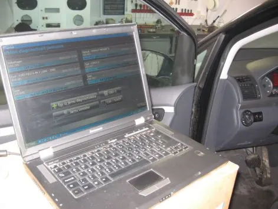
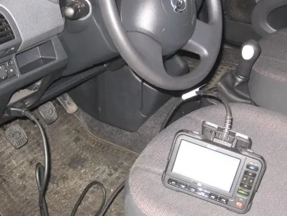
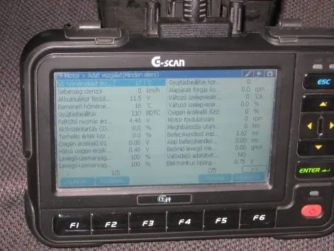

Autóvillamosság és diagnosztika Pécsen
Ha világít a motor-, a légzsák- vagy az ABS-lámpa, keressen bizalommal. Gyári szintű műszerrel kiolvassuk a hibakódot, megkeressük az okát, és megjavítjuk.
Kattintson arra a lámpára, amelyik az Ön autóján világít.
Melyik lámpa világít, vagy mi a gond?
Válassza ki, mit tapasztal. Megmutatjuk, mit jelezhet, mit tudunk tenni vele, és egy gombbal beírjuk az időpontkérőbe.
Motorhiba-lámpa
Mit jelezhet?
Amit vállalunk
Az okot csak a műszeres vizsgálat mutatja meg biztosan.
Amivel foglalkozunk
Autóvillamossági javítás és műszeres gépjármű-diagnosztika egy pécsi műhelyben, az Eozin utcában.

Műszeres diagnosztika
Hibakód olvasás és törlés. Motor, légzsák, ABS és klíma diagnosztika, programozás – gyári szintű műszerekkel.
Autóvillamossági javítás
Indítómotor, generátor, akkumulátor, világítás és a gépjármű teljes elektromos rendszere.
Központi zárak
Kulcsos és távirányítós központi zárak beszerelése, gyári vagy utólagos zárak javítása. Központizár-vezérlővel a kulcsos zár szinte minden típusban távirányítóssá alakítható – így a kulcs és az ajtózárak sem kopnak.
Komfortelektronika, ablakemelő
Elektromos ablakemelők és a kényelmi funkciók hibáinak javítása.
Szervizintervallum nullázás
A szerviz után nullázzuk a szervizintervallum-kijelzést.
A márkájához való műszerrel dolgozunk
Egy általános hibakódolvasó sokszor csak a felszínt látja. Mi márkacsoportonként gyári szintű műszert használunk.
Dec Supercan
Ha világít a motor-, a légzsák- vagy az ABS-lámpa.
VAG-COM
A régebbi, még nem OBD csatlakozós típusokat is meg tudjuk vizsgálni.
G-scan
Motor, légzsák, ABS és klíma diagnosztika, hibatörlés, programozás.
Írja be a márkát, és megmutatjuk, melyik műszerrel vizsgáljuk.
Az olasz autók, az Opel, a Ford és a Rover teljes körű diagnosztizálását is vállaljuk.


Egy műhely, ahol elmondják, mi miért romlott el
Pécsett több mint 25 éve foglalkozunk autóvillamossággal. Arra törekszünk, hogy ügyfeleink a legnagyobb elégedettséggel távozzanak, és a jövőben is problémájukkal hozzánk forduljanak.
Ügyfeleink leggyakrabban ezt írják rólunk:
- gyorsan kapnak időpontot, sürgős esetben akár soron kívül;
- rendezett, tiszta műhely, az autó sérülés és olajfolt nélkül kerül vissza;
- a hibát elmagyarázzuk, és ha van, alternatívát is ajánlunk;
- korrekt, méltányos ár.
„Patika műhely, rendezett környezet, tiszta szerelőruha! Alternatívákat kínál a Mester. Elmondja, mi miért, ok-okozat. Nem lehúzós.”
„Pénteki telefonbeszélgetésünkkor hétfőre adott időpontot, miközben más szerelők jó két héttel később lettek volna hajlandóak csak fogadni.”
„Az autóm ablakelektronikai hibáját gyorsan és precízen megoldotta. Ár-érték arányban is teljesen korrekt.”Összes vélemény a Google-on
Időpontkérés visszahívással
Írja le röviden, mi a gond és milyen autóról van szó. Visszahívjuk, és megbeszéljük, mikor tudja hozni. Ez még nem foglalás, és nem jár kötelezettséggel.
Gyakori kérdések
Ha nem találja a válaszát, hívjon nyugodtan.
Milyen autókat tudnak diagnosztizálni?
A francia típusokat (Peugeot, Citroën, Renault) Dec Supercan műszerrel gyári szinten, a Volkswagen-csoport típusait a VAG-COM gyári programmal, a távol-keleti autókat G-scan műszerrel. Az olasz autók, az Opel, a Ford és a Rover teljes körű diagnosztizálását is vállaljuk.
Ki tudják olvasni és törölni a hibakódot?
Igen. Műszeres diagnosztikával kiolvassuk a hibakódot, megkeressük az okát, és a javítás után töröljük.
A kulcsos központi zárat át lehet alakítani távirányítósra?
Igen, központizár-vezérlő beépítésével ez szinte minden típusba megoldható. Nem csak kényelmesebb: a kulcs és az ajtózárak sem kopnak, aminek a cseréje elég költséges.
Nullázzák a szervizintervallumot?
Igen, a szervizintervallum nullázását is vállaljuk.
Mikor vannak nyitva?
Hétfőtől péntekig 8 és 17 óra között. Szombaton és vasárnap zárva vagyunk.
Kell előre időpontot kérni?
Érdemes előtte telefonálni a 06 20 942 5103-as számon: elmondja, mi a gond, és megbeszéljük, mikor tudja hozni az autót.
Itt talál minket
- 7630 Pécs, Eozin u. 10.Kerekesszékkel megközelíthető bejárat és parkoló
- 06 20 942 5103Vezetékes: 72/213-525
- E-mailszjoevill@gmail.com
- Hétfő–péntek 8–17Szombat, vasárnap zárva